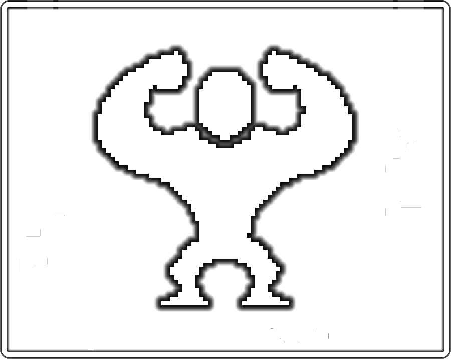

Too many to count!
Kahmohn
Most common of the furfolk.
They are slightly smaller than Primials.
They prefer to live close together in towns and around them.
They are notorious for being really good cooks.
Their long tails keep them balanced allowing for enhanced acrobatics.
Skree
Pretty common amongst the furfolk, those bushy tails though...
They live throught out the forest and prefer nature to city life but its not uncommon to see them in the city.
Skree have a pretty keen sense of whats around them and are first to notice things like storms.
Skree makeup 40% of the population and will soon control the population as they typically have no problem mating.
Nohn
Less common amongst the furfolk and more active at night.
Nohn live wherever makes them happiest. However they typically live alone.
Nohn have kleptomanic tendencies.
 |
 |
 |